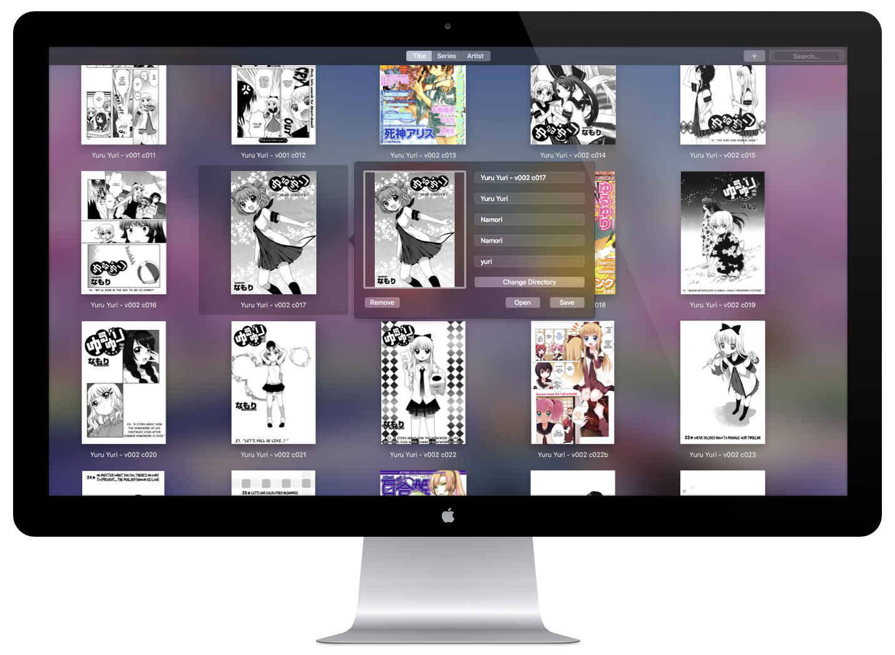

Make a mistake when you import your Manga? Don't worry, Komikan's got you covered.
Double click any manga to edit its information(Cover, title, series, artist, writer, tags and file) with a simple UI.
And if you don't want one anymore, you can remove it with one button.
